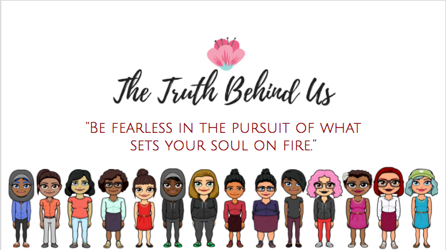

DANIELLE MULLAN

I am a high school student in New York City who is interested in coding, sports, and astronomy. My interest in coding is largely due to my involvement in my seven week immersive Girls Who Code experience at App Nexus. I learned the basics of Scratch, HTML, CSS, Python, and Java. I was also introduced to various computer science oriented occupations through App Nexus. Since then I have continued my passion for computer science through the #BUILTBYGIRLS Wave advisee program. I look forward to further hoaning my skills.
PROJECTS
ABOUT ME
favorites/least favorites
LIKES: DOGS, BLUES MUSIC, THE FALL, ASTRONOMY, BOOKS, COMEDY, AND CARTOONS.
DISLIKES:THE MTA AND SEAFOOD.
favorite websites
spotify
the atlantic